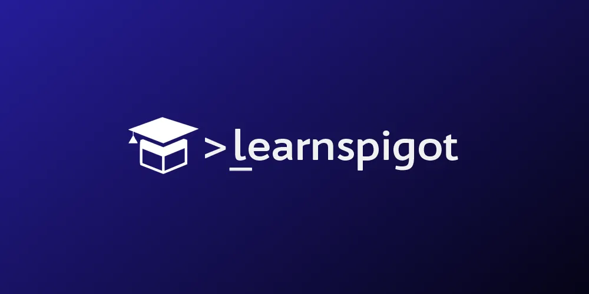
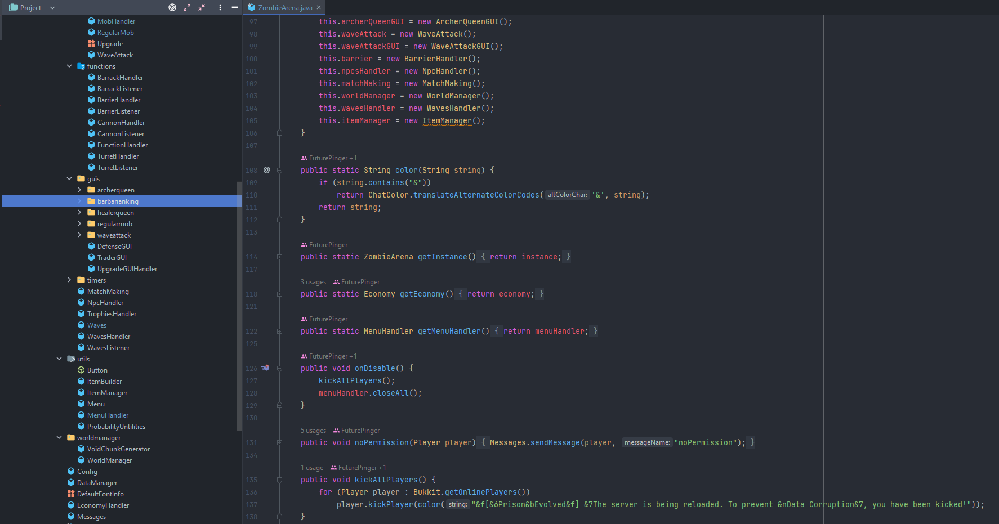

Portfolio
“Whatever your life's work is, do it well. A man should do his job so well that the living,
the
dead, and
the unborn could do it no better.” - Martin Luther King, Jr
PrisonEvolved

PrisonEvolved was my first big project. We created this over six years with my best friend. We
went
through many versions of this server. It took thousands of hours of research and development. I
was
the entire backend portion of this "Network"; Along with a portion of the frontend side of
things.
Throughout this project, we made around $3000 of net profit.
Although this project gave us many ups and downs but expanded his and my knowledge by a great
extent. This was the main reason I got into coding. Without coding, a Minecraft server is almost
impossible to make, but over 90% of it was done without it. This was because of our great
problem
solving. We were able to make our wildest dreams come true. We did this my extensive research of
figuring out how we could incorporate one plugin's function into another. Although this did have
a major
drawback. It made the performance of the server go way done, which gave us a limit of how much
we
could add. We eventually realized this, and we decided to shut down the server. The reason for
this
It was because it was too big of a project for two people. Having one person code the entire
server
and the other one was coming up with ideas and handing players. It just became too much.
This, by far, was my favorite project that I have worked on. It gave us many challenges, which
led
us to learn some valuable lessons. It also was the main reason that got me to start my career
as
a Software Engineer!
LearnSpigot
LearnSpigot is the reason why I am where I am. What is LearnSpigot? LearnSpigot is one of the
largest
course that teaches you the Spigot API for Minecraft Development. Which is soon to have over
10,000
student. With a discord server of over 5,000 students. I have very happy to say that I was able
to claim
support role within the discord server. Which is filled with great and knowledgeable people. Our
role
as a support team is to engage with peers in order to help others with development issues that
they
are facing. This allows us all to expand our knowledge miraculously and give us experience in
new
places. That we may not have been able to. It allows me to build the skills that are required in
a
team setting. I am very excited to be a part of this amazing community that Stephen (the owner)
has built, and I hope I will always be a part of it!
ZombieArena Plugin
The ZombieArena project is probably the project that I am most proud of. The amount of hour and
effort
was put into this is insane (still currently a work in progress). With 9000 lines of code
written in over
60 classes. This project is my first ever within the genre of programming. Although the code may
not be
the cleanest. It has allowed me to fully understand how to develope something from scratch.
Throughout
the creation of this. I was challenged with a lot bugs and problems. Although the community of
LearnSpigot were able to give me the resources and knowledge needed to go in the right
direction.
Part of me wants to fully re-code the entire project due to the amount that I learned throughout
the
process. I know I could make the project work a lot better a long with making the code
productivity
much better. Maybe some day I will! If you'd like to see the source code of this project.
Click
Me!